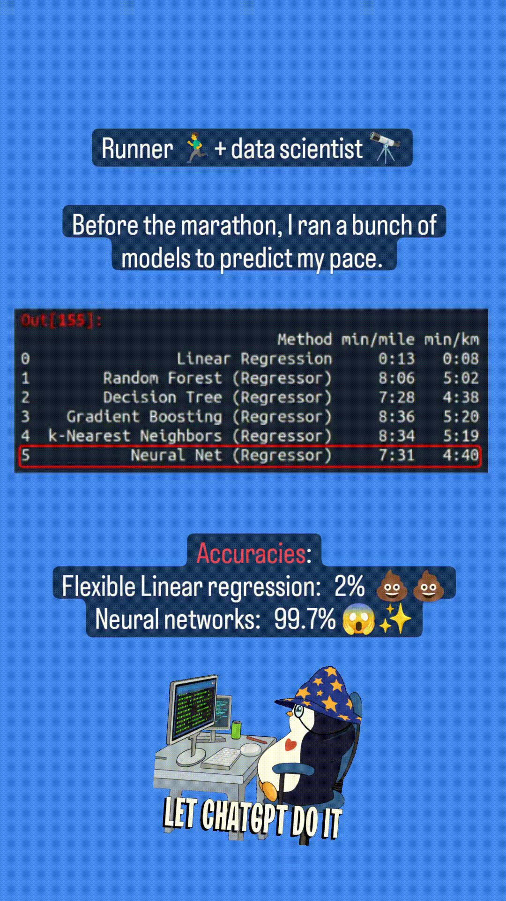
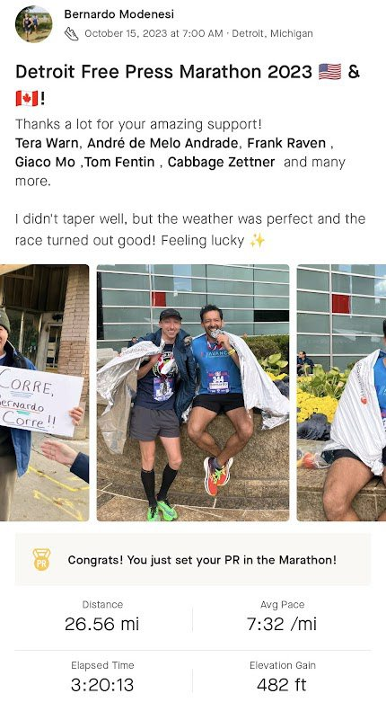

Data Science + Running: PREDICTING BETTER THAN THE GIANTS GARMIN & RACEX
I love both running & data science. The week before my 2023 marathon, I was feeling a bit lost about what my race pace should have been, given that I was a beginner runner.
In the midst of excitement and anxiety for the race, I selected 7 representative runs I've done, put their data together and thoughtfully created models to predict my average race pace. The best models using a cross-validation criterion were consistently Neural Networks & Decision Trees, but they were giving me faster times than what both my Garmin and RaceX were telling me.
It turns out that my two best models were 99% accurate ✨, beating Garmin's predictions by ~5min, even though Garmin has super detailed data for +500 runs I've made in my life, in addition to sleep data, etc, plus a huge team of excellent sports data scientists.
Why Neural Networks & Decision Trees? I had little data (N = 106 miles, from 7 runs) and, among the models that I ran, these were flexible enough to capture all of the data non-linearities (as opposed to restrictive linear regression or k-means), without having a complex data greedy architecture (as opposed to Random Forest or Gradient Boosting, the neural net had a relatively simple architecture).
Data structure: N = 106 miles, from 7 runs, with carefully selected features:
- Dummy for weather temperature: hot or not 🔥
- Dummy for race or no race 🏁
- How long ago each run was (in days) 📅
- Average heart rate for the mile ❤️
- Average pace for the mile 🏃
- Average elevation gain for the mile ⛰️
- Total amount of miles in the run 📏
- Which mile was it in the run 🔢
Some social media screenshots about this:

